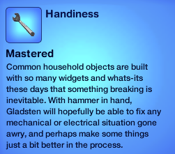

Biography
Gladsten Slay is a chill, funny, charming father and a loyal husband. He also has a goofy name. His favorite book is the Bible.
Occupation
Gladsten works in the field of science. He's probably the best in town, as he is nearly the highest level in his occupation. (proof pictured below)
Hobbies
If there's one thing you need to know about Gladsten, it's that he loves his side hobbies! These hobbies include writing and handiness, both of which he has mastered.
